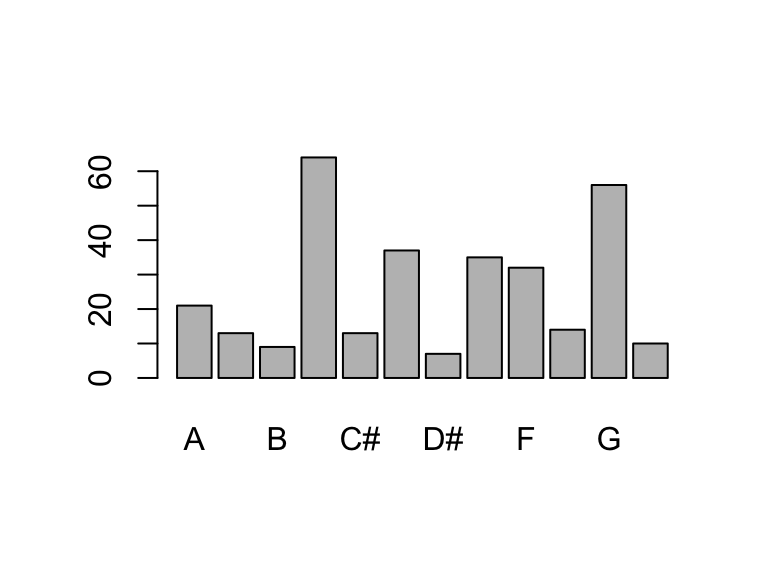
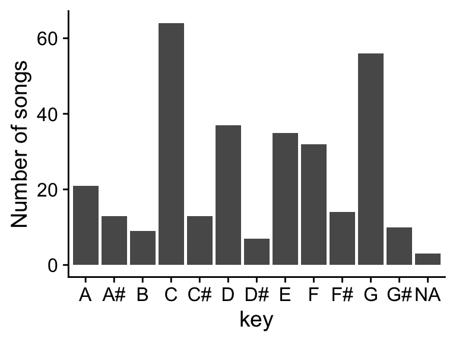
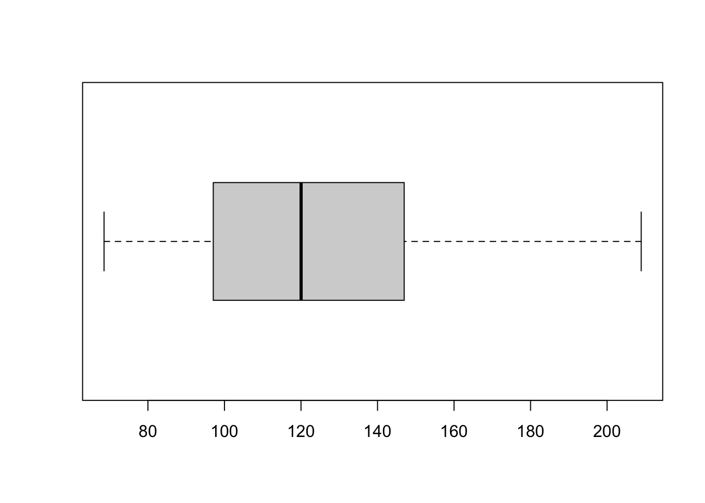

library(readr)
# reading in csv is for importing comma-separated files
# base R
data_base <- read.csv(file = "data/taylorswift.csv",
header = TRUE,
sep = ",",
stringsAsFactors = TRUE)
# Tidyverse
data_tidy <- read_csv(file = "data/taylorswift.csv",
col_names = TRUE)Navigating Data Types in R
Reading for Class 02
The last class introduced important concepts in data science such as directory structure, working directories, projects, and quarto documents. This lesson will dig deeper into working with data in R. We will cover importing and exporting, data types, and data objects
Spreadsheets are good for data entry. As a scientists, we have a lot of data in spreadsheets. However, data exploration, manipulation, and visualization tools in spreadsheets are extremely limited and cumbersome when performed manually. Much of your time as a researcher will be spent data wrangling to generate the analyses you desire. R makes this process easy and most importantly reproducible.
Learning objectives
At the end of this lesson you will be able to:
- Generate and navigate a quarto document
- Understand what packages are and how to use them
- Get data in and out of R
- Recognize and create various data types in R
Welcome to Quarto
In the first class, we looked at the PalmerPenguins data in a very tidy and curated quarto document to see how you can incorporate narrative text, code, outputs, and more in a single document. I hope you can now appreciate the utility of using Quarto to tell the story of the data analysis. The beautiful html outputs can easily be shared with others and helps build the logic of a data analysis pipeline from beginning to end.
Read the Quarto welcome tutorial to learn about some of the cool tools, such as code-folding, echo=false, and more.
- Read through Part 1: “Hello, Quarto”
- Read through Part 2: “Computations”.
- Part 3 is more advanced for generating diverse outputs such as pdf documents feel free to explore, but we won’t use these features.
Packages
What is a package?
In R, the fundamental unit of shareable code is the package. A package bundles together code, data, documentation, and tests, and is easy to share with others. There are tens of thousands of R packages that exist. Two main repositories of R packages exist. CRAN or the Comprehensive R Archive Network is the public clearing house for R packages and where you went to install R. Bioconductor is an open source project that develops and shares open source software for precise and repeatable analysis of biological data. It is this huge variety of packages that R is so successful because the chances are high that someone has already solved a problem that you’re working on.
How to get a package?
To install packages from CRAN use the install.packages() function. Once the package is installed you can load the package using the library() function. Installing packages from Bioconductor take a few more steps which we won’t cover just yet.
In Lecture 2, we will use data from the tidyverse and taylor packages.

Tidyverse package
The Tidyverse which is a collection of R packages that share an underlying design, syntax, and grammer to streamline many main functions used in data science. You can install the complete tidyverse with install.packages("tidyverse"), once the package is installed you can load it using library(tidyverse).
We will go over more details about all the functions of the tidyverse package next class!
Taylor package
The taylor package is for accessing and exploring data related to Taylor Swift’s discography, including lyrics and audio characteristics. The data comes from Genius and the Spotify.
Tidy Syntax
The BIG picture of what we do in data science.

Import
First we need to import data into R. I prefer to import .csv files because it is a good way to indicate a data file and it eliminates any weird formatting that may exist in excel. Think of your .csv files as immutable, the data stays the same and the code is the reproducible record of data manipulation. If you go and change the raw .csv there is no record of that modification, with code you can always know exactly how the data was treated.
I am showing 2 ways to import data one using the base R function read.csv() and the other using the readr function read_csv().
In base R, the header field determines if the first row of the data had column header titles or not. The stringsAsFactors determines if the character variables in your data set should be set as a factor variable (set as TRUE) or as character (set to FALSE). The row.names field specifies if the first column is data or the names of the rows.
In tidyverse, the col_names field specifies if the first row is a header. If you want to specify the type of data for each field you have to specify it using the col_types field. I’ll show you a cool trick here in class. There are a lot more options you can look at in the Help section. Try typing read_csv in the Help query box.
Using readr you can also import data directly from excel spreadsheets using read_excel or read_xls and even google sheets using read_sheet. However, we won’t use these function in the course. But you are free to explore them on your own from the readr package.
Export
You can also save files using the write functions for both csv or tsv files.
# base R
write.csv(data, file = "data/taylorswift.csv")
# Tidyverse
write_csv(data, file = "data/taylorswift.csv")Explore
Anytime you get a data set the first thing you have to do is look at it! Some basic things to look at are:
- Use the
dim()function to check the size of the data set ornrowto count the rows andncolto count the columns. - Use the
class()function to determine if an R object is a vector, matrix, or dataframe. And if the data type is in character, numeric, factor, or logic, for example. - Use the
table()orcount()functions to tally the data to see how many types of any variable glimpse()is a quick way to view a snapshot of top of the data.
DATA TYPES
Remember these are the main types of data in R:
- character
- numeric
- integer
- factor
- logical
data size and types
Lets look at data types in the taylorswift data in R
# first load the packages we are going to need
library(tidyverse)
# next import some data, as an example we are using the taylorswift data
data <- read_csv(file = "data/taylorswift.csv",
col_names = TRUE)
# What kind of data is it? Its a dataframe, in tidyverse a tidy table is called a tibble.
class(data)[1] "spec_tbl_df" "tbl_df" "tbl" "data.frame" # Its good to start any data analysis with basic data exploration.
# how many columns or measurements are there in the data frame?
ncol(data)[1] 21# how many rows or observations are there in the data frame?
nrow(data)[1] 314# when we imported the data, what is the type of each measurement in the data columns?
# one way to look at this is to use the map function which is actually a loop that runs the function class on each column of data.
as.data.frame(map_chr(data, class)) map_chr(data, class)
album_name character
album_release Date
track_number numeric
track_name character
danceability numeric
energy numeric
key numeric
loudness numeric
mode numeric
speechiness numeric
acousticness numeric
instrumentalness numeric
liveness numeric
valence numeric
tempo numeric
time_signature numeric
duration_ms numeric
explicit logical
key_name character
mode_name character
key_mode character# another way to to use glimpse to preview each column of data in a tidy way and it also gives an abbreviation of the data class.
glimpse(data)Rows: 314
Columns: 21
$ album_name <chr> "Taylor Swift", "Taylor Swift", "Taylor Swift", "Tayl…
$ album_release <date> 2006-10-24, 2006-10-24, 2006-10-24, 2006-10-24, 2006…
$ track_number <dbl> 1, 2, 3, 4, 5, 6, 7, 8, 9, 10, 11, 12, 13, 14, 15, 1,…
$ track_name <chr> "Tim McGraw", "Picture To Burn", "Teardrops On My Gui…
$ danceability <dbl> 0.580, 0.658, 0.621, 0.576, 0.418, 0.589, 0.479, 0.59…
$ energy <dbl> 0.491, 0.877, 0.417, 0.777, 0.482, 0.805, 0.578, 0.62…
$ key <dbl> 0, 7, 10, 9, 5, 5, 2, 8, 4, 2, 2, 8, 7, 4, 10, 5, 7, …
$ loudness <dbl> -6.462, -2.098, -6.941, -2.881, -5.769, -4.055, -4.96…
$ mode <dbl> 1, 1, 1, 1, 1, 1, 1, 1, 0, 1, 1, 1, 1, 1, 1, 1, 1, 1,…
$ speechiness <dbl> 0.0251, 0.0323, 0.0231, 0.0324, 0.0266, 0.0293, 0.029…
$ acousticness <dbl> 0.57500, 0.17300, 0.28800, 0.05100, 0.21700, 0.00491,…
$ instrumentalness <dbl> 0.00e+00, 0.00e+00, 0.00e+00, 0.00e+00, 0.00e+00, 0.0…
$ liveness <dbl> 0.1210, 0.0962, 0.1190, 0.3200, 0.1230, 0.2400, 0.084…
$ valence <dbl> 0.425, 0.821, 0.289, 0.428, 0.261, 0.591, 0.192, 0.50…
$ tempo <dbl> 76.009, 105.586, 99.953, 115.028, 175.558, 112.982, 1…
$ time_signature <dbl> 4, 4, 4, 4, 4, 4, 4, 4, 4, 4, 4, 4, 4, 4, 4, 4, 4, 4,…
$ duration_ms <dbl> 232107, 173067, 203040, 199200, 239013, 207107, 24810…
$ explicit <lgl> FALSE, FALSE, FALSE, FALSE, FALSE, FALSE, FALSE, FALS…
$ key_name <chr> "C", "G", "A#", "A", "F", "F", "D", "G#", "E", "D", "…
$ mode_name <chr> "major", "major", "major", "major", "major", "major",…
$ key_mode <chr> "C major", "G major", "A# major", "A major", "F major…table() & count()
Lets look at the distribution of some of the data using table() and count() functions. These functions counts the number of times each variable appears in the data. table() and count() work great for factor and character variables, but poorly for continuous and numeric variables unless there are only a few options.
The differences between table() and count() is the package they are part of and the format of the output. count() is part of the tidyvse and uses tidyverse syntax and outputs the results as a tibble. table() is part of base R and the output is a table. The count() function uses the tidyverse pipe syntax, “|>”. The table() function uses the data subsetting synatx “$”. Both of these syntaxes are very common.
Note
Remember: Piping syntax
|> is the same as %>%
Lets look at some examples.
# Here is an example using a character vector.
table(data$key_name)
A A# B C C# D D# E F F# G G#
21 13 9 64 13 37 7 35 32 14 56 10 data |> count(key_name)# A tibble: 13 × 2
key_name n
<chr> <int>
1 A 21
2 A# 13
3 B 9
4 C 64
5 C# 13
6 D 37
7 D# 7
8 E 35
9 F 32
10 F# 14
11 G 56
12 G# 10
13 <NA> 3# Here is an example using a numeric vector.
table(data$time_signature)
1 3 4 5
2 11 294 4 data |> count(time_signature)# A tibble: 5 × 2
time_signature n
<dbl> <int>
1 1 2
2 3 11
3 4 294
4 5 4
5 NA 3# Here is an example using a logical vector.
table(data$explicit)
FALSE TRUE
278 33 data |> count(explicit)# A tibble: 3 × 2
explicit n
<lgl> <int>
1 FALSE 278
2 TRUE 33
3 NA 3As you can see the NA values are excluded in the table() function and the output is shaped differently. The output form changes how you use it for downstream analyses.
# For example, we can the base R plot() or barplot() functions to look at the table output, but not the count output.
barplot(table(data$key_name))
data |> count(key_name) |> plot()Warning in xy.coords(x, y, xlabel, ylabel, log): NAs introduced by coercionWarning in min(x): no non-missing arguments to min; returning InfWarning in max(x): no non-missing arguments to max; returning -InfError in plot.window(...): need finite 'xlim' values# For the count() output we use the tidyverse plotting package called ggplot2(). This gives tons more flexibility in how the plot is rendered than the plot() function.
data |> count(key_name) |> ggplot(aes(x = key_name, y = n)) + geom_col() + theme_cowplot() + ylab("Number of songs") + xlab("key")
If we want to look at the distribution numeric vectors table() and count() won’t work that well instead we can use the summary() function.
summarise and distributions
# Base R
summary(data$tempo) Min. 1st Qu. Median Mean 3rd Qu. Max. NA's
68.53 97.07 120.03 124.40 146.97 208.92 3 boxplot(data$tempo, horizontal=TRUE)
hist(data$tempo, breaks = 20)# ggplot
a <- ggplot(data, aes(y = tempo)) + geom_boxplot(fill = "deepskyblue") + theme_cowplot() + scale_x_discrete( )
b <- ggplot(data, aes(x = tempo)) + geom_histogram(fill = "deepskyblue") + theme_cowplot()
plot_grid(a,b, nrow = 1, labels = c("A", "B"))Note: We’ll go over the details of ggplot in a future lecture. For not just go along with the magic.
convert
Oftentimes text is imported as a character variable. However, you may want that to be a factor to indicate there are 4 groups, or a numeric variable should actually be a factor. The most common data type conversions are between:
characters –> factors
numeric –> factors
For example, if you measured something across time: 1, 5, 15, 30, 60, 120, then plotting the data across the expansive axis will make each groups not evenly divided so it can be useful to make the numeric variable a factor so all the data groups plot next to each other.
We can look at this in the taylorswift data. If we plot the album release date as a date we can see the time represented in the distance and sometimes we may want that but other times we may not.
# sometimes we want numeric variables as numbers and sometimes we want them to be factors. In this case the x axis is spaced based on the time between album releases.
ggplot(data, aes(x=album_release, y = track_number, color = album_name)) + geom_point()
# However, if we look at the data in a different way having all the data scrunched at one end is hard to visualize when the time variable isn't needed to be viewed over time.
ggplot(data, aes(x=album_release, y = loudness, fill = album_name)) + geom_boxplot()# It would look better to see the data more evenly distrubuted. To do that we can convert the date variable to a factor variable
data$album_release <- as.factor(data$album_release)
ggplot(data, aes(x=album_release, y = loudness, fill = album_name)) +
geom_boxplot() +
scale_x_discrete(guide = guide_axis(angle = 90))Its now easier to see the relationship of loudness over time and the variance in each album.
Another example
In another example, can see in the plots above the “album_name” is colored alphabetically, and with so many groups its hard to tell which bar is which album.
We can instead plot the album_name on the x-axis, but the album_names are plotted alphabetically so you loose the sense of the loudness change over time.
ggplot(data, aes(x=album_name, y = loudness)) +
geom_boxplot() +
scale_x_discrete(guide = guide_axis(angle = 45)) + theme_cowplot() 
Solution: Convert the album name to a factor with a specified order of release date!
# Convert the character vector of "album_name" into a factor variable and specify the levels by the album release date.
data$album_name <- factor(data$album_name, levels = unique(data$album_name[order(data$album_release)]))
ggplot(data, aes(x=album_name, y = loudness, fill=album_name)) +
geom_boxplot() + scale_fill_manual(values=album_compare) +
scale_x_discrete(guide = guide_axis(angle = 45)) + theme_cowplot() + theme(legend.position="none")In sum, you’ve learned about importing and exporting data into/out of R. About how to look at the distribution of different types of data such as categorical and numerical. We looked at a few different plotting strategies to visualize the data distrubution. And finally how to convert to a factor variable to better handle the data. Having numeric variables formated at numeric or factor can also make a huge difference in how they are treated in certain statistical tests. Keep this in mind during data analysis.
Want More?
There are so many great tools to learn R and data science!
To explore the tidyverse and data science in more detail check out the R for Data Science textbook written by Hadley Wickham, Mine Çetinkaya-Rundel, and Garrett Grolemund.
Want more stats and data science conversations?! Check out the not so standard deviations podcast by Roger Peng and Hilary Parker.